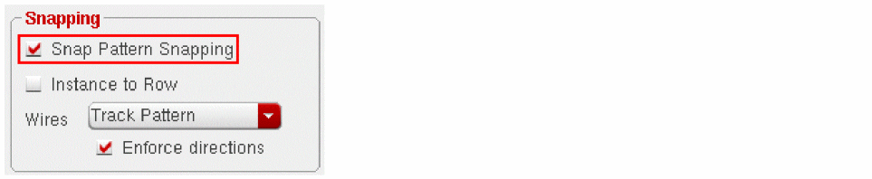
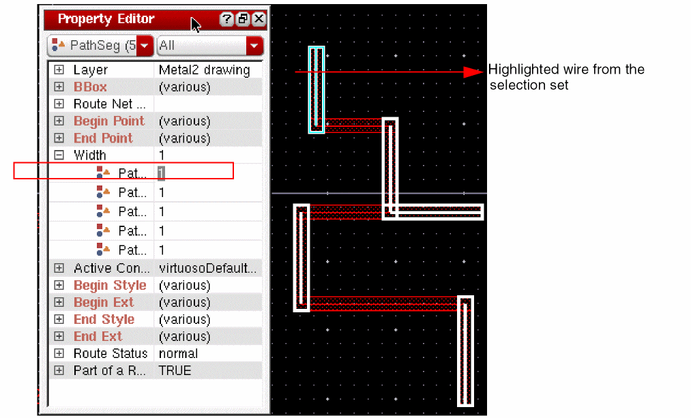
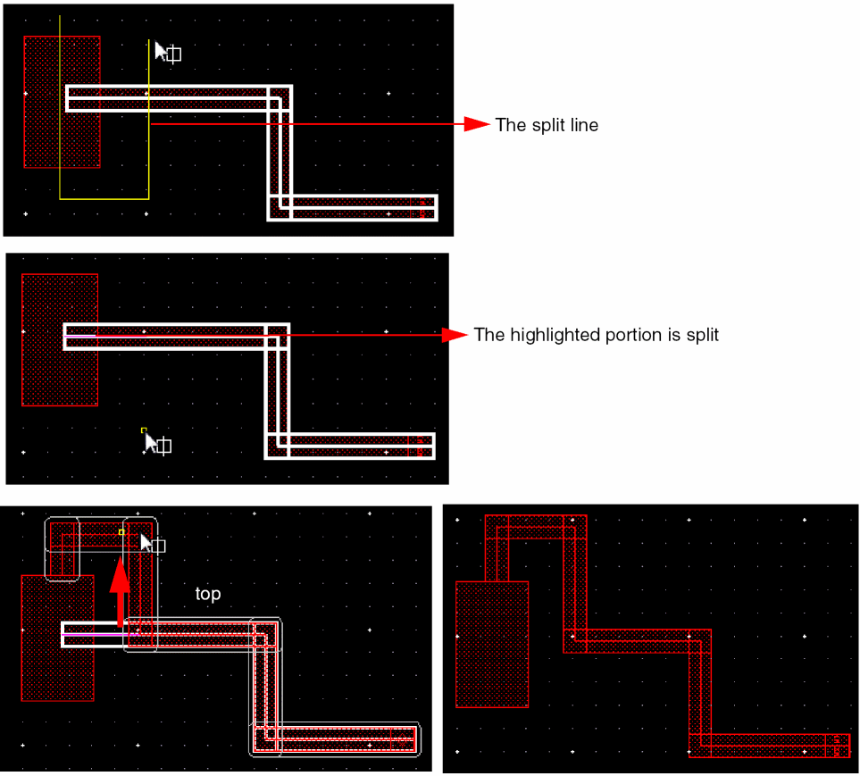
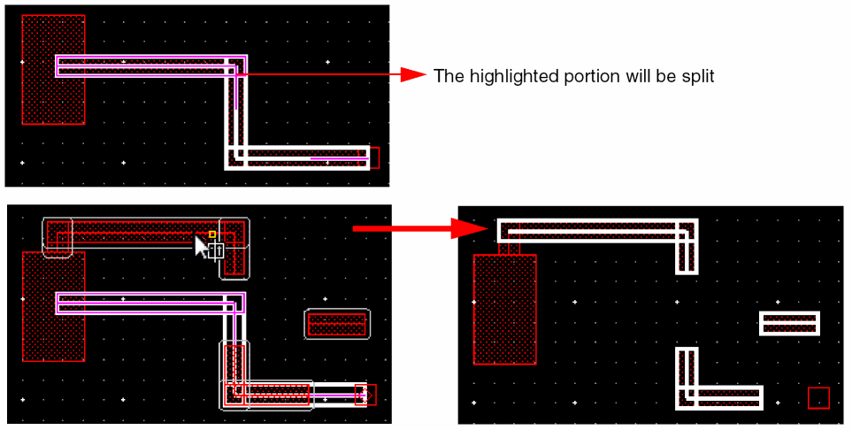
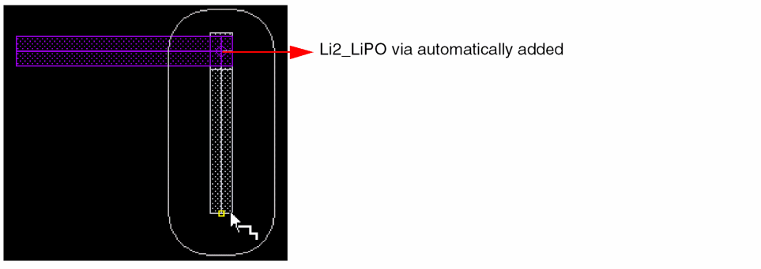

3
Working with Wires
This chapter describes how to set options for the Virtuoso® wire editing capability and create wire interconnect.
- Introduction to Wires
- Creating Wires
- Editing Wires
- Splitting Wires and Vias
- Support for Local Interconnect (Li/MOL) Layers (ICADVM20.1 Only)
- Smart Snapping in Interactive and Assisted Routing Commands
- Support for Mosaics in Create Wire
- Support for cdsGenVia for Different Purposes
- Setting Dynamic Measurement for the Area Calculation
- Support for Pixel Based Gravity
- Displaying Wire Summary
Introduction to Wires
This section covers the following concepts.
Types of Wires
You can create a wire using Paths or Path Segments (pathSegs). The different types of wires you can create include:
For information about how to create these wires, see Creating Wires. For information about how to distinguish between the two types of wires, see Differentiating Between Geometric and Symbolic Wires.
Geometric Wires
Geometric wires are created using paths, pathSegs, and vias that are not contained within a route. Paths cannot be placed in routes, therefore, paths are always geometric data. Geometric wires can be created in Virtuoso Layout Suite. Geometric wires are usually used for special routing (power, ground, clock, and so on), which is not the default for creating wires in Virtuoso. Geometric wires can be used to create custom interconnect that auto signal routers do not modify when re-routing, ripping-up, and pushing wires. The autorouter does not create, delete, or re-route geometric data but it may connect to geometric data. You can convert Geometric Wires to Symbolic Wires by using Edit – Wiring – Decompose Trunks.
Symbolic Wires
Symbolic wires are created using pathSegs and vias that are contained within routes. Routes are internal containers used by the system to group pathSegs and vias. They are usually attached to nets and can have default constraint groups assigned. In Virtuoso, symbolic wires can be created by using the Create – Wiring – Wire or the Create – Wiring – Bus command in all tiers of Layout Suite. Symbolic wires are typically used for signal routing, which is the default for creating wires in Virtuoso. The Virtuoso Space-based router only creates well-formed symbolic wires with matching end points.
Symbolic data can be modified by pushing wires by using DRD and automatic routing if the routing status is different than Locked or Fixed. The Point to Point, Guided Routing and automatic router create symbolic wires. The Finish Wire command is available only for symbolic wires.
Symbolic wires correspond to the DEF NETS statement definition.
The advanced features of the wire editor works only with symbolic wires.
Differentiating Between Geometric and Symbolic Wires
In XL, if you enable DRD Mode and Enable Pushing in the DRD Options form (Options – DRD Edit), any geometric wires and shapes and fixed/locked wires (even if symbolic) are dimmed if you start the Create – Wiring – Wire, Create – Wiring – Bus, or the Edit – Stretch command.
This is illustrated in the figure below. In the DRD Options form, DRD modes Enforce and Notify and Enable Pushing are selected. The blue wire is a geometric wire created on neta. If you try to create a symbolic wire on netb, represented by the red wire in the figure below, the blue geometric wire is dimmed.
DRD-Enforce with Push works on pre-routed paths and segments.
The fastest and easiest way to identify if a wire is symbolic or geometric is using the Property Editor.
Wire Elements
Wire elements include paths, pathSegs, and vias. The description of each element as it is used when creating wires is as follows:
-
Paths (Create – Shape – Path)
Using paths for routing creates geometric data. Paths support anyAngle mode. When used to create non-orthogonal routing, paths can lead to off-grid vertices depending on the width and angle being used. Paths are not supported by Innovus (Cadence digital place and route platform) as a route element, they are considered as a special nets. You must use pathSegs instead of paths when saving data to Innovus.
digital.
-
PathSegs (Create – Wiring – Wire)
When pathSegs are created in routes, the data is symbolic. When pathSegs are not created in routes, the data is geometric. PathSegs can be used to create on-grid 45 degree wires. The width of a diagonal pathSeg is manipulated to force vertices of the perimeter on the manufacturing grid. PathSegs cannot be used for any-angle routing and are limited to orthogonal and diagonal routing. A pathSeg has a start point and an end point.
-
Vias
Two types of vias are supported: standard vias and custom vias and via variants.
ThestandardViaDefshas a unique name and is associated with two layers and a list of via parameters with default values. It is a predefined device, generated based upon the value of its parameters. When creating wide wires, standard vias support via arrays. Rows and columns of vias are placed based on the area of metal overlap. Standard vias also allow you to edit the cut pattern of via arrays.
ThecustomViaDefshas a unique name and is associated with a master cellview and two layers. AcustomViaDefsis a special purpose via. Thelib/cell/viewis declared in the technology file for the custom via. It could be a fixed via or a Pcell.
You can have all standard vias, all custom vias, or a mixture of standard and custom vias.
Wire Objects
Wire objects include segment (pathSeg), continous pathSegs, and T-junction. The description of each object as it is used when creating wires is as follows:
Selecting a Single Object or Via
Full or partial selection (press F4) selects a single wire element or via.

Partial selection (press F4) selects a single vertex of a wire element.
Routing Granularity Options
For selecting routing objects, you can specify Routing Object Granularity in the Selection Options (Options – Selection) form. The granularity options are supported only in the current hierarchy and in the Layout XL and higher tiers. The granularity options include:
Shapes or Vias
In the Shapes and Vias mode, when a via or shape that is used to make a wire is selected, only the single object is highlighted.

Entire Wire
In the Entire Wire mode, when a shape or a via is selected, the selection is extended to select all the objects forming the wire.
Connected Shapes
In the Connected Shapes mode, when a shape or a via is selected, the selection is expanded to select all the objects that form a physical connection. This mode does not take into account the net assignment on shapes and vias. The selection expansion stops if more than 1000 objects are found. In the case of more than 1000 objects, only the object on which the cursor rests is selected.
All Shapes on a Net
In the All Shapes on a Net mode, when a shape or a via is selected, the selection is expanded to select all the objects assigned to the same net. The selection expansion stops if more than 20,000 objects are found. In the case of more than 20,000 objects, only the object on which the cursor rests is selected.
Net
In the Net mode, the net object is selected. If a shape has no assigned net, it will not be highlighted.
The net is selected in the Navigator assistant and is probed in the layout window. The method in which the net is displayed (probed) in the layout window is determined by the Highlight Options form. The shapes assigned to the net can be highlighted or flightlines can be displayed. There is no limit on the number of shapes that can be highlighted.
In the Net mode, a net in the current edited cellview can be selected by clicking on any pin of an instance that is hierarchically connected to it.
In Example 1: clicking on Pin A or Pin B selects the net X. Observe that when net X is selected, only the pins on level-1 are highlighted
In Example 2: clicking on Pin A selects nothing because the pin does not have a direct connection to a top level net.
In the Net mode, clicking on an instance selects all the nets connected to it, if there is no pin at the cursor. In the example below, clicking on the instance selects the nets X, Y and Z.
Wire Parameters
Width is one of the important parameters of a wire. The default wire width is determined from the minWidth constraint that can be set in different types of constraint groups. For information on constraint group precedence, see Constraint Groups.
To set the wire width from the current constraint automatically, the current density must be specified in the technology file. Also, ensure that for layerRules, the avgDCCurrentDensity value is specified under currentDensity in the technology file.
Then, set the maxDCCurrent constraint on the object whose width is to be set. For example, to set the max DC current to 0.2mA on the net myNet, specify the following:
create_constraint_group -name myGroup -net myNet
set_constraint -group myGroup -constraint maxDCCurrent -FltValue 0.2
The router calculates the current-based width and snaps it up to the closest manufacturing grid. Then the existing minWidth constraints are also taken into account and the larger of the two is considered. In addition, if discrete wire widths are specified, the nearest greater wire width is selected. For example, the following five discrete wire widths have been specified: 1, 2, 4, 6, 8. Assume that based on the current constraint, the calculated width needs to be at least 4.3333. In this case, the nearest greater width value, which is 6, is considered.
When tapping a wire, if the Tap Attributes option in the Layout Editor Options form is on, the width of the new wire is determined from the width of the wire being tapped, provided it is compliant with the minWidth and maxWidth constraints.
The three environment variables , , and also determine the width of the wire being tapped.
For information about wire width when starting from pins, see Setting the Wire Width.
This section covers the following topics:
Overriding Default Width Values By Using a Constraint Group
You can create a constraint group to override the default minWidth and minSpacing values and attach the constraint group to a specific net or nets.
-
Create and load a constraint group.
The constraint group in the following example is calledwide. The width and spacing values in thewideconstraint group are greater than theminWidthandminSpacingvalues in thefoundryconstraint group.;( group [override] )
;( ----- ---------- )
( "wide "nil
spacings(
( minWidth "Metal1 "0.3 ) ( minSpacing "Metal1 "0.17 ) ( minWidth "Metal2 "0.48 ) ( minSpacing "Metal2 "0.3 ) ( minWidth "Metal3 "0.48 ) ( minSpacing "Metal3 "0.3 ) ( minWidth "Metal4 "0.48 ) ( minSpacing "Metal4 "0.3 ) ( minWidth "Metal5 "0.48 ) ( minSpacing "Metal5 "0.3 ) ( minWidth "Metal6 "0.48 ) ( minSpacing "Metal6 "0.3 )
) ;spacings
-
In XL, choose Window – Assistants – Navigator.
This opens the Navigator assistant. - Select the net for which you want to override the default values.
-
Choose Window – Assistants – Constraint Manager.
This opens the Constraint Manager. -
Click the Process Rules Editor icon
.
The Process Rules Editor window opens. - Ensure that the required net is selected in the Process Rule Editor.
- From the Apply Constraint Group list, select the constraint group that you created and loaded earlier.
-
Click the blue arrow button to attach the constraint group to the net.
The window updates to show the User-Defined constraint group. - Click the plus sign to display the values in the constraint group.
-
Exit the Process Rule Editor.
The width and spacing values set on the selected net will be used when routing the net interactively or automatically.
Setting the Wire Width
Right-click the mouse button when the Create Wire command is active. Select the Use Width command on the right-click context menu to display the options. This command also appears on the Create Bus Context-Sensitive Menu.
The default width of the wire is determined from the constraint group selected in the Layout Editor Options form.
When starting a wire, the width of the wire can be tapped from a pin, a via, or another wire. This is determined from the Tap Attributes in the Layout Editor Options form as well as the Tap Wires Width, Tap Vias Width, and Tap Shapes and Pins Width options in the Use Width context-sensitive menu. The Tap Wires Width option is used when starting from a wire, the Tap Vias Width option is used when starting from a via, and the Tap Shapes and Pins Width option is used when starting from a shape or a pin.
If the width is not tapped, it is determined by the Constraint Overrides options and Default Constraints option available in the Use Width context-sensitive menu. For more information on these options, refer to Use Width.
During the wire creation, the value of the Width field determines the width for the current segment and the value of the width mode in the context-sensitive menu describes how it has been computed. Modifying the width in the Width field of the Create Wire form automatically changes the mode to Constraint Override - by layer. Changing the mode accordingly changes the width of the existing wire.
While digitizing points to create the wire, add vias to change layers. The method to control the selection of vias is described in detail in the Changing Layers and Selecting Vias section. The width after a change of layer is again computed using the same mode. In order not to change the width, select the Constraint Override - Same for all layers mode.
For information about changing layers, see Changing Layers and Selecting Vias. For information about creating via arrays, see Creating an Array of Vias.
Creating Wires
The Create Geometric Wire enables you to create paths, pathSegs, and vias that are not in routes. The Create Wire command enables you to create pathSegs and vias that are in routes. You can define the wire characteristics by using the Layout Editor Options Form and the Create Wire form. You can also define wire characteristics by using the
Before creating wires, ensure that the following requirements are satisfied:
- The required layer and via definitions exist in the technology file. For more information, see Technology Requirements.
- The required settings for wires are configured. For more information, see Setting up the Interactive Routing Environment.
This section covers the following topics:
- Creating a Wire
- Creating a Diagonal Wire
- Creating a Floating Wire
- Creating a Wire with 45 Degree Segments
- Creating an Odd Width Wire
- Creating Wires Snapped to Track Patterns (ICADVM20.1 Only)
Creating a Wire
You can create two Types of Wires: geometric and symbolic.
-
To create geometric wires, open the Create Geometric Wire Form using the leHiCreateGeometricWire command.
To create symbolic wires or pathsegs, select Create – Wiring – Wire. Press
F3to open the Create Wire Form.
You can use one of the following alternative methods to invoke the command and then pressF3to open the respective form:-
Click the Create Wire icon
 on the Create toolbar.
on the Create toolbar. -
Right-click at any free space in the design canvas to display the Layout context menu and select Create – Wire.The above alternative methods open the Create Wire Form.
-
Click the Create Wire icon
-
(Geometric only) Select Paths or Segments from the Create Geometric Wire form to specify the type of wire element to be used for creating wires. For more information, see Wire Elements.
(Symbolic) The Create Wire form, by default, uses pathSegs in route for creating single wires. -
(Optional) In the Net Name field, specify a net name for the wire.
The wire being created is assigned to the specified net. If the specified net does not exist in the design, the net is created. -
To change the width of the current wire, type the desired width in the Width field.
The default width displayed in the Width field is determined from theminWidthconstraint. For information about overriding the default value, see Overriding Default Width Values By Using a Constraint Group.
If the command is active but the form is hidden, you can use Use Width option on the Create Single Wire Context-Sensitive Menu to change the width of the wire or open the form to specify a value. See Setting the Wire Width.
The Create Wire command follows a center-line model, which requires that half the wire width is a multiple of the manufacturing grid. In addition, when you create a wire, the center line of the wire snaps to the manufacturing grid. If the width you specify is a multiple of the manufacturing grid, the width is adjusted for snapping.-
During Create Wire and Create Geometric Wire commands (
leHiCreateGeomtericWire), the length of a path(Seg) segment is checked with respect to its width. The option to check the length of a path(Seg) segment and enforce the same is the Half Width Check option in the Layout Editor Options form.The Create Geometric Wire command generates paths or pathSeg segments, while the Create Wire command only create pathSegs.- When Half Width Check option is set to off, which is the default, no warning is issued when you create a path(Seg) segment that has a length less than half the width.
- When Half Width Check option is set to notify, a dialog box is displayed informing you that an error condition has been detected, but allows you to continue with the operation.
- When Half Width Check option is set to enforce, you will not be allowed to create a path or pathSeg with length less than half the path width and a dialog box is displayed informing you that the path or pathSeg length is less than half the width.
-
During Create Wire and Create Geometric Wire commands (
- (Optional) Turn on Justification to control which direction to offset the path or pathSeg from the digitized points of the path or pathSeg.
-
(Optional) To offset the wire from the pointer by a specified distance, type the offset amount in the Offset field. This is a numeric field and does not allow a blank entry. When an entry other than a numeric value is given, a warning is issued and the offset is set to the previous value.
-
Select the beginning and ending extension style.
- If you use paths to create a wire, choose truncate, round, extend, or variable.
- If you use pathSegs to create a wire, set the Begin Style and End Style to one of truncate, extend, variable, or custom.
-
The default extension is truncate for path or pathSeg endpoints, and variable for paths or pathSegs ending on a via.The begin and end style that are finally applied to a pathSeg depend on the begin and end extension values you specify for them. For example, if you choose custom as the Begin Style and End Style but the extension value corresponds to that of extend, the pathSeg created will have extend begin and end styles. You can view the begin and end style of the pathSeg created in the Property Editor assistant.
- Specify a ROD name if you want to create the wire as a ROD object. This is applicable only for Paths.
- Choose a value from the Snap Mode cyclic field. If set to orthogonal or diagonal, you can choose to create orthogonal or diagonal wires.
- Specify if you want the wire to snap to the center of rectangular pins.
- (In Layout XL and higher tiers) Select Auto Terminate while creating a wire(s) for terminating the wire(s) with a single click.
- (In Layout XL and higher tiers) You can choose to Probe Nets.
- (In Layout XL and higher tiers) Select Pin Covers to automatically cover the source and target pins.
-
To start creating a wire, do one of the following:
- In the Net Name field, specify a net name to start creating a wire in empty space in the design display area. See Creating a Floating Wire.
- Pre-select an I/O pin before starting the Create Wire command and then digitize subsequent points.
- Area select a pin (I/O pin or Soft Block pin), via, path, or wire to tap the layer and attributes to define the starting point of the wire. Digitize the wire. For more information about tapping objects, see Tapping Wires.
-
(In Layout XL and higher tiers) To use the smart snapping feature of wire, switch on the Smart Snapping (Only in XL/GXL) command on the Create Single Wire Context-Sensitive Menu.
For more information, see Smart Snapping in Interactive and Assisted Routing Commands.While creating a wire from a top-level pin, the smart snapping feature ignores the access direction of the pin. When starting a wire from an instance pin, the smart snapping feature respects the access direction of the instance pin. If the access direction of the instance pin isWhen using the Create Wire command, flightlines are displayed between current net targets. The flightline from the current pointer position to the closest target is dynamically updated as the pointer moves.nil, all directions (top, bottom, left, right) are available for starting the wire.The Create Wire command identifies terminals with the must-connect pin setting and displays the additional flightlines for all the pins that need to be connected. The flightlines are displayed between the currently selected pinFig of the source terminal to the end points for all pins of the destination terminal.For more information, see Working with Pin Connectivity Models. -
For floating wires, select a layer from the Layers Assistant. For more information, see Creating a Floating Wire.
In Virtuoso Layout Suite XL and more advanced versions, when starting a path or pathSeg from an existing path or pathSeg, the starting point is snapped to the centerline of the tapped path or pathSeg. In Virtuoso Layout Suite L, the starting point remains as digitized.
- Change the wire layers. For information about changing layers, see Changing Layers and Selecting Vias.
-
To remove the last segment of a wire, use
Backspace.
Multiple wire editing supports Undo, Redo, andBackspace. -
To finish creating the wire, press
Enter. For more information, see Finishing Connections.
You can use Smart Snapping (Only in XL/GXL) on the Create Single Wire Context-Sensitive Menu to snap the wire to the target pin. The wire snaps only to pins that are on the current layer and on the same or an unassigned net. If the pin is on the same net as the wire, smart snapping auto-terminates the wire by adding a segment to the snapping point.
The Create Wire command allows starting or finishing wires in open space, at locations in the design where there are no objects. The Create Wire command also allows starting or terminating wires on existing pathSegs to create "T" connections.
In addition, the Create Wire command displays halo taking into consideration the minEndOfLineSpacing constraint defined in the technology file. For example:
( minEndOfLineSpacing "Metal1" 'width 0.09 'distance 0.07 'minLength 0.2 'twoSides 0.1 'ref "METAL1.SP.3" 'description "Minimum Metal1 End of Line Spacing" )
In the above example, the minEndOfLineSpacing is 0.1. Therefore, the halo spacing that is considered by the Create Wire command is 0.1.
Creating a Diagonal Wire
When creating wires, you have the option of using paths or pathSegs as elements of the wire. Using Segments (pathSegs) allows you to create a string of joined path-like objects with the assurance that the mask outline of the wire is on the manufacturing grid, including points where adjacent pathSegs join. Using paths to create wires does not assure that the paths are on grid, since paths can be created in anyAngle mode.
PathSeg end styles are automatically adjusted so that they are in accordance with the manufacturing grid. End styles are adjusted to extend style. When reshaping a pathSeg the same adjustments occurs; the resulting pathSegs will be adjusted to adhere to the manufacturing grid.
Creating a Floating Wire
To create a wire in the empty space in the design display area:
- Choose Create – Wiring – Wire.
-
Press
F3to open the form.
The Create Wire Form appears. - In the Net Name field, type in a net name for the wire.
- In the Layers assistant, select a layer for creating the wire.
- Digitize points where you want to route the wire.
Creating a Wire with 45 Degree Segments
The Wire to 45 command is available only for path segments, both with single and multiple wires (bus). This command is available in Layout XL and higher tiers.
With the Wire to 45 command you can adjust the right-angled corners to create 45-degree wire segments that are design rule correct. The Wire to 45 command can be applied to a bus only if all wires are on the same layer. To start the Wire to 45 command:
- Choose Edit – Wiring – Wire to 45.
-
Click and drag to select the right-angled corners of a bus, as shown in the following figure.
A white, L-shaped mark appears on the inside line of the wires, as shown in the following figure. In case of a single wire, a white, I-shaped mark appears on the inside line of the wire.
-
Click a wire with the mark and drag it to the point where you want to create the 45 degree wire segment. The bus with right-angled corners changes to the 45-degree segments, as shown in the following figure.
You can select and adjust multiple right-angled corners for a single-wire path segment. To select multiple right-angled corners, hold down theShiftkey and then select the required corners using the mouse, as shown in the following figure.
Now when you click the wire with the mark and drag it to the point, multiple right-angled corners are converted to 45-degree wire segments, as shown in the following figure.
Creating an Odd Width Wire
Before IC6.1.6 ISR4, when the width of the wire was specified as an odd value in the Create Wire form, it was automatically adjusted to the smallest even width greater than the input. For example, if the manufacturing grid (mfgGrid) is 0.001m and the width specified by you is 0.015m, the width of the wire is automatically adjusted to 0.016m. However, now you have the flexibility of creating a wire with an odd width. An odd width is a width which is an odd multiple of the mfg. For example if mfgGrid=0.001m and the width of the wire is = 0.015m, this is an odd width of the wire.
When you create a wire with an even width, the centerline of the wire segment is snapped to the mfgGrid. However, when creating a wire with an odd width, the centerline of the wire segment is off the mfgGrid. The steps to create a wire with an odd width are as follows:
- Choose Create – Wiring – Wire to start the Create Wire command.
-
Press
F3. The Create Wire options form displays. -
Specify an odd value in the Width field so that the wire with an odd width is created. When the wire is created with an odd width, the centerline of the wire segment is not on the mfgGrid, whereas the edges of the wire segment are on the mfgGrid, as shown in the following figure.
-
When creating a wire with an odd width, you can insert a via by selecting the Via Up <metal layer> option from the Create Wire context-sensitive menu. The following figure displays a via created between
Metal2andMetal3wire segments.
Creating Wires Snapped to Track Patterns (ICADVM20.1 Only)
Snapping wires to track patterns is supported in all tiers of Virtuoso Layout Suite. You can select the snapping mode as Manufacturing Grid, Routing Grid, Off Grid, Track Pattern, and Snap Pattern. When the Snap To Track option is selected in the Layout Editor Options form, you are allowed to create wires only in the area where there are intersecting horizontal and vertical tracks. When stretching wires, if more than one linear section is selected, snapping to track is disabled.
The objects that are snapped to grids include wires, paths, and pathSegs. The following commands support track pattern snapping:
For displaying and creating track patterns, see
For more information on colored tracks, see
To enable snapping of wires to track patterns, perform the following steps.
- Choose Options – Editor.
-
Select the Track Pattern option from the Wires drop-down list in the Snapping group box. When the Track Pattern option is selected, the Enforce directions check box can be selected.
When the Enforce directions check box is selected, the wire is snapped to the center line of the track pattern. Also, the wire inherits the width of the track pattern and the direction in which the wire is created is the same as the direction of the track pattern. The Enforce check box is selected by default. However, if the Enforce directions check box is deselected, the width of the wire is the default width and there is no restriction on the direction in which the wire is snapped.
If existing wires are snapped to tracks, the wires can be edited and snapped to tracks using the Move, Stretch, and Copy commands. When the Track Pattern option is selected from the Wires drop-down list and the Move and Copy commands are selected, the pin center of rectangular pins is snapped to tracks.
Snapping of Wire on Tracks
During wire creation, the valid track patterns of a layer are displayed. Also, only the tracks corresponding to the current layer and a layer above or below it are shown.
Before wire creation, the valid track patterns of the current layer are dynamically displayed. When a wire is being created, only the tracks to which wire is snapped is displayed. The track patterns of the adjacent layer (upper and lower) are also displayed.
In order to have the wires snapped to the track patterns and WSPs, ensure that the snapWireGrid environment variable is set before wires are created. Thus when a wire is created on a metal layer, the magnet automatically pulls the wire towards track patterns intersections and the wire is snapped to the nearest track intersections with its adjacent upper and lower layer. Finally, the created wire inherits the width and direction of the track to which it is snapped, as shown in the following figure.
Automatic Via Insertion on Tracks During Wire Snapping
During wire creation, the track magnet snaps to the intersection of the upper or lower layer tracks. When you click on the track intersection, a via is automatically placed and the wire then changes the direction and moves in the perpendicular direction, as shown in the following figure.
You can also place a via before clicking on a track intersection by using the Via up to <layer_name> and Via Down to <layer_name> options in the Create Single Wire context-sensitive menu. In this case, the wire always snaps at the track intersection, as shown in the following figure.
After the via is automatically placed, one of the metal layers is selected by default if the tracks of the lower and upper layers coincide. However, you can switch between the valid tracks of the upper and lower layers by selecting the Cycle Snapping Layer option in the Use Width Spacing Pattern submenu. In the following set of figures, Figure A shows that the wire is created on Metal4, and when the via is placed on the track intersection, Metal5 is selected as the default layer. Figure B displays the switch between the selected layers when the Cycle Snapping Layer option is clicked and Metal3 layer is now selected.
Assigning a trackPattern Constraint to a Net
You can assign a trackPattern constraint to a net by attaching a constraint group to a net default constraint group and that constraint group in turn has a trackPattern constraint. The constraint describes a list of allowed trackPattern names per routing layer to which wires are snapped to. The trackPattern names can be specified in the Create – Track Pattern GUI.
Editing Wires
This topic covers the following sections:
- Editing Wire Properties
- Editing Via Properties
- Editing Cut Patterns
- Multiple Wire Editing
- Editing Wire Width
- Editing Layer-Purpose Pair
- Adjusting Vias While Editing Layer-Purpose Pair
Editing Wire Properties
To display or modify a wire element, follow these steps:
-
Select wire element you want to edit and choose Edit - Properties [q].
The attributes of the selected wire element display in the form. If all elements of the wire are selected, they can be accessed using the Next and Previous buttons on the Edit Properties form. - Click the Next or Previous buttons to choose a specific element of a wire.
- Type or select new values for the wire element and click OK.
For information about editing properties, see
The following tables shows the attributes of wire elements, which can be modified.
PathSeg Element Attributes
Path Element Attributes
| Attribute | Modifiable |
|---|---|
Editing Via Properties
For information about editing properties of vias, see
Editing Cut Patterns
Only standard vias are supported when editing the cut pattern of a via array.
To modify a cut pattern, follow these steps:
-
Select standard via array you want to edit and choose Edit – Properties [q].
The Edit Via Properties form appears. -
Click on Edit Cut Pattern.
The Edit Cut Pattern form appears and the current pattern for the via array is displayed. -
Select one of the following:
- Click Quick Edit and select a predefined pattern from the Patterns cyclic field.
- Click Wall Paper and select a predefined pattern from the Patterns cyclic field. Further edits can be made by turning on or off the buttons of the pattern to edit the array.
- Click Manual Edit and turn on or off the buttons of the entire array pattern.
- Click OK in the Edit Cut Patterns form to update the data of the via array.
Multiple Wire Editing
Multiple wire editing is allowed in Virtuoso Layout Suite XL and higher tiers.
When interactively routing multiple wires, if you enter points and then want to back up, use the backspace to undo the points you entered, then enter the new points. Do not draw segments back over previously drawn segments.
Each net involved in multiple wire editing can have its own constraints. If a net is part of a bus or bundle, constraints can be specified on the bus or bundle to share the same constraints. Net-based constraints are supported, providing the ability to have different widths in the wires in a bus, or different spacings between different pairs of adjacent wires in the bus.
Wires created follow the applicable constraints for the nets to which each individual wire belongs.
- If two adjacent wires in the bus have different spacing requirements, the larger value is used.
- If there is a taper rule constraint specified on a terminal, a wider or narrower wire width will be routed within the specified taper window.
- If there is a minimum extension constraint, wire ends connecting to vias are adjusted appropriately.
For information about finishing multiple wire connections automatically, see Finishing Connections.
Editing Wire Width
You can use the Property Editor assistant or the Edit Properties form in order to change the width of a single segment or the width of several segments simultaneously. However, this essentially considers segments independently. Changing the width of a segment would create notches if its begin and end extensions’ values and styles are set improperly. The connected segments at its begin and end points must be considered in order to compute the extension style and values appropriately, thus avoiding notches.
Therefore, a new capability has been introduced wherein; when changing the width of a wire segment, its begin and end extensions’ values and styles are adjusted automatically in order to avoid notches with other connected segments. This enhancement only works for pathSegs and the behavior depends on the set of selected segments. Consider a specific segment whose width is being changed: if all the segments of the spine to which this segment belongs to are selected, than changing the width of this specific segment actually changes the width of all the segments of the spine to the same value. Otherwise, the width of only this segment is changed.
Using the Property Editor Assistant
Using the Property Editor assistant, you can change the width of a single wire, multiple wires, or a spine. To change the width using the Property Editor assistant, from the layout window, select the wires whose width you want to change and then choose Window – Assistants – Property Editor. Alternatively, right-click anywhere in the menu bar or the toolbar area and choose Property Editor. The Property Editor assistant is displayed. The following figure shows the Property Editor assistant along with the selected wire in the layout window.
You can now edit the width of a single wire, multiple selected wires, a single spine, or multiple spines using the Width field of the Property Editor assistant.
Selecting a Single Wire
You can select a single wire only when the Path Spine mode is OFF. When a single wire is selected, you can edit the width of a wire by specifying a new width in the Width field of the Property Editor assistant. The following figure shows how the selected wire is highlighted and the width of the selected wire is changed in the layout canvas, when a new width is specified in the Width field of the Property Editor assistant.
Selecting Multiple Wires
When the Path Spine mode is OFF, you can select multiple wires from the layout design. Once the wires are selected, you can either change the width of multiple wires simultaneously or change the width of a single wire from the selection set.
-
Editing the width of a single wire from a selection set
Using the Property Editor assistant, you can edit the width of a single wire from the selection set. Place the pointer on the wire, which you want to edit, in the Property Editor assistant. The following figure displays how the wire on which the pointer is placed is highlighted in the layout widow.
By default, the first selected wire is highlighted in the Property Editor assistant.
To change the width of the highlighted wire, specify the new width value in the column next to the selected wire in the Property Editor assistant and press theEnterkey. The following figure displays the changed width of the highlighted wire from the selection set.
-
Editing width of multiple wires simultaneously
To edit the width of multiple wires simultaneously, place the pointer on the Width field in the Property Editor assistant. All the wires in the selection set are highlighted, as shown in the following figure.
Specify the new width value in the column next to the Width field of the Property Editor assistant and pressEnter. The following figure displays how the width of all the selected wires has changed simultaneously.

Selecting a Spine
Using the Property Editor assistant, you can also change the width of a set of selected wires, which forms a spine. To change the width of a spine, select a spine from the layout window. The following figure displays the selected spine along with each of its elements in the Property Editor assistant.
You can edit the width of entire spine by placing the pointer on the Width field of the Property Editor assistant and then specifying the new width value in the Width field. The following figure displays how the entire spine is highlighted when the pointer is placed on the Width field. The figure also shows how the width of the entire spine is changed when a new value is specified in the Width field of the Property Editor assistant
Note that if an entire spine is selected and if the width of one element of the selected spine is updated, the entire spine is updated with the same width value. The following figure shows that by editing the width of one element of the selected spine, the entire spine is updated with the same width value.
Selecting Multiple Spines
You can edit the width of multiple spines simultaneously or edit the width of a single spine from the selection set.
-
Editing width of a single spine from a selection set
Using the Property Editor assistant, you can edit the width of a single spine from the selection set. To edit the width of a single spine from the selection set, place the pointer on the element of the spine whose width you want to change. The following figure displays how the element of the spine on which the pointer is placed is highlighted in the layout widow.
To change the width of the highlighted spine, specify the new width value in the column next to the selected element of the spine in the Property Editor assistant, and pressEnter. The following figure displays how the width of the spine, whose element was selected in the Property Editor assistant, has changed.
-
Editing width of multiple spines simultaneously
To edit the width of multiple spines simultaneously, place the pointer on the Width field in the Property Editor assistant. All the spines in the selection set are highlighted, as shown in the following figure.
To change the width of the all the spines simultaneously, specify the new width value in the column next to the Width field of the Property Editor assistant and pressEnter. The following figure displays how the width of all the selected spines has changed simultaneously.
Using the Edit Properties Form
Using the Edit Properties form, you can change the width of a single element, multiple elements, or a spine. To change the width, select the wires or the spine whose width you want to change and then choose Edit – Basic – Properties. Alternatively, click the Edit Properties icon on the toolbar. The Edit Properties form is displayed. The following figure shows the Edit Properties form along with the multiple wires selected in the layout window when the Path Spine mode is OFF.
You can edit the width of a single wire, multiple wires, or a spine by specifying a new width value in the Width field of the Edit Properties form.
Selecting a Single Wire
When only a single wire is selected, you can edit the width of a wire by specifying a new width in the Width field. The following figure shows that the selected wire is highlighted and how the width of the selected wire is changed in the layout canvas when a new width is specified in the Width field within the Edit Properties form.
Selecting Multiple Wires
Using the Edit Properties form, you can either change the width of multiple wires simultaneously or change the width of a single wire from the selection set.
-
Editing Width of a Single Wire From a Selection Set
While editing the width of a single wire from the selection set, the wire that has been first selected in the selection set is highlighted. Specify a new width value in the Width field. The following figure displays the changed width of a wire, which was first selected in the selection set.
While editing the width of a single wire from the selection set, if you want to change the width of the next or the previous wire in the selection set, you can navigate to the next or the previous wire in the selection set by using the Next and Prev buttons in the Edit Properties form. -
Editing the width of multiple wires simultaneously
To edit the width of multiple wires simultaneously using the Edit Properties form, select the Common check box at the top of the Edit Properties form. The following figure displays how the width of multiple wires has been changed simultaneously when the Common check box is selected.
Selecting a Spine
You can also change the width of a spine using the Edit Property form. To change the width of a spine, select a spine from the layout window. The spine can only be selected when the Path Spine mode is ON.
You can edit the width of the entire spine by specifying the new width value in the Width field within the Edit Property form. The following figure displays how the width of the entire spine has been edited when you specified the new value in the Width field.
Selecting Multiple Spines
Using the Edit Properties form, you can either change the width of multiple spines simultaneously or change the width of a single spine from the selection set.
-
Editing the width of a single spine from a selection set
While editing the width of a single spine from the selection set, the spine that has been first selected in the selection set is highlighted. Specify a new width value in the Width field. The following figure displays the changed width of a spine, which was first selected in the selection set.
 While editing the width of a single spine from the selection set, the Common check box in the Edit Properties form is deselected.If you want to change the width of the next or the previous spine in the selection set, you can navigate to the next or the previous spine by using the Next and Prev buttons in the Edit Properties form.
While editing the width of a single spine from the selection set, the Common check box in the Edit Properties form is deselected.If you want to change the width of the next or the previous spine in the selection set, you can navigate to the next or the previous spine by using the Next and Prev buttons in the Edit Properties form. -
Editing the width of multiple spines simultaneously
To edit the width of multiple spines simultaneously using the Edit Properties form, specify a new value in the Width field and select the Common check box at the top. The following figure displays how the width of multiple spines has been changed simultaneously when the Common check box is selected.
Adjusting Via While Editing Wire Width
The parameters of the vias that are connected to a segment’s begin and end points can be adjusted when the width of a segment is changed. The parameters are updated only if it is a standard via. The steps to adjust the via parameters connected to a segment while editing its width are as follows.
- Select a wire with via parameters.
- Select the Adjust Edited Vias Params check box in the Wire Editing group box in the Layout Editor Options form.
- Specify the new width value for the selected wire in the Width field.
-
Click OK. The following figure displays the via adjustment when the width of a wire is edited.
Editing Layer-Purpose Pair
You can change the layer-purpose pair of a single segment or of several segments simultaneously. Consider a specific segment whose layer-purpose pair is being changed: if all the segments of the spine to which this segment belongs to are selected, then changing the layer-purpose pair of this specific segment changes the layer-purpose pair of all the segments to the same layer-purpose pair. Else, the layer-purpose pair of this segment is only changed.
Changing the Layer-purpose Pair of a Single Wire
You can change the layer-purpose pair of a wire using the Edit Properties form or the Object Property assistant. To change the layer-purpose pair, select the layer-purpose pair for the selected wire from the Layer drop-down box in the Edit Properties form. The following figure displays the changed layer-purpose pair for the selected wire.
Changing the Layer-Purpose Pair of Multiple Wires
Editing Layer-Purpose Pair of a Single Wire
You can also change the layer-purpose pair of a single wire from the selection set. The following figure displays the changed layer-purpose pair of a wire, which was first selected in the selection set.
Editing Layer-Purpose Pair of Multiple Wires Simultaneously
To edit the layer-purpose pair of multiple wires simultaneously using the Edit Properties form, select the Common check box on top of the Edit Properties form. The following figure displays how the layer-purpose pair of multiple wires is changed simultaneously when the Common check box is selected.
Changing the Layer-Purpose Pair of a Spine
To change the layer-purpose pair of a spine, select a spine and then select the layer-purpose pair for the selected wire from the Layer drop-down box in the Edit Properties form. The following figure displays the changed layer-purpose pair for the selected wire.
Changing the Layer-Purpose Pair of Multiple Spines
Changing Layer-Purpose Pair of a Single Spine
You can also change the layer-purpose pair of a single spine from the selection set. The following figure displays the changed layer-purpose pair of a spine, which was first selected in the selection set.
Changing LPP of Multiple Spines Simultaneously
To edit the layer-purpose pair of multiple spines simultaneously using the Edit Properties form, select the Common check box at the top of the Edit Properties form. The following figure displays how the layer-purpose pair of multiple spines is changed simultaneously when the Common check box is selected.
Adjusting Vias While Editing Layer-Purpose Pair
You can change the layer-purpose pair of a pathSeg. While changing the layer-purpose pair of a pathSeg, the via on the pathSeg automatiocally gets adjusted. Depending upon the change in layer-purpose pair of a pathSeg, the vias are either added or deleted such that the resulting feometries are still physically connected to each other.
The steps to adjust vias while changing the layer-purpose pair are as follows.
- Select a wire with via.
- Right-click the selected wire.The context-sensitive menu is displayed.
- From the context-sensitive menu, select Properties. The Edit PathSeg in Route Properties form is displayed.
- In the Edit PathSeg in Route Properties form, click the Layer drop-down list and select a layer-purpose pair.
- Click OK.
Let us consider an example, where the vias exists between Metal 4 drw and Metal7 drw, as shown in the following figure.
When the layer-purpose pair of a wire is changed form Metal7 drw to Metal9 drw, the vias are automatically adjusted, as shown in the following figure. In this scenario, the vias are added when the layer-purpose pair is changed.
Now, when we again change the layer-purpose pair of a wire from Metal9 drw to Metal6 drw, the vias are again adjusted automatically. In this scenario, vias are automatically removed when the layer-purpose pair is changed.
Splitting Wires and Vias
When a wire is selected, the Split command lets you split and stretch a portion of a wire.
- Select the wire you want to split.
-
Choose Edit – Advanced – Split [
Control+S]. Alternatively, you can open the Split Form by pressingF3. The Split form opens. -
Click on the points of the split line.
Use the middle mouse button to toggle between the split segments. In the above example, the split alternately highlights the wire section interior to the split lines, and the two segments of the wire exterior to the split lines.
When the split line is drawn clockwise, the split command selects the parts of the wire outside the split lines first. When the split shape is drawn counterclockwise, the split command selects the parts of the wire interior to the split lines first. In the case of a single split line, toggling with the right mouse button alternates between the sides of the object divided by the split line. -
Click on the reference point for the stretch.
-
Click the new location to split the wire.
The above figure shows the split wire in no connection mode. You can maintain the connection when the wires and vias are split.
Using Keep Wires Connected to Split Command
When a set of wires and vias are connected to each other, and when a wire and via are selected and split, they are not connected any longer. To maintain the connection when the wires and vias are split, use the Keep Wires Connected To option of the Split form. The three options that you can use to maintain the connection even when wires and vias split are shown in the following figure.
- Spine wires only maintains connections to spine wires but not to connecting vias when splitting a spine. This option is selected by default. For information about selecting a spine, see Selecting a Path Vertex.
- All wires and vias maintains pathSeg-to-pathSeg and pathSeg-to-via connections during a split. When this option is selected, the Lock Unselected Vias option is enabled. Selecting the Lock Unselected Vias option, locks the unselected vias and does not allow you to change the position of the via.
- No wires and vias does not maintain pathSeg-to-pathSeg and pathSeg-to-via connections during a split.
You can split wires and vias when the spine selection mode is ON, which is the default mode, and when it is OFF. The behavior of spliting wires and vias is different in both the situations.
Using the Spine wires only Option
To maintain connections to spine wires but not to connecting vias when splitting a spine, select the Spine wires only option from the Keep Wires Connected to drop-down list in the Split form.
When Spine Selection Mode is ON
-
When vertical and horizontal spine wires are selected as a part of a split line
The following figures illustrate splitting and stretching of spine with Spine selection mode ON.
The following figures illustrate how the spine is split when it is stretched along the left, right, top, and bottom directions.
-
When the vertical spine wire is not selected as a part of a split line
Consider the following scenario where the vertical spine wire is not selected as a part of a split line. In this case, you are not able to split the spine in the left and the right directions. The split can only happen along the top and the bottom directions. The following figures illustrate the spine split only in the top and bottom directions.
-
When the horizontal spine wire is not selected as a part of a split line
Consider the following scenario where the horizontal spine wire is not selected as a part of a split line. In this case, you are not able to split the spine along the top and bottom directions. The split can only happen along the left and right directions. The following figures illustrate the spine split only in the left and right directions.

-
Spine connected to a shape and is part of a split line
You can also split a spine that is connected to a shape and still maintain the connection of the spine with the shape. To maintain the connection of a spine with a shape, select the Keep wires connected to shapes check box below the Keep Wires Connected to list box.
The following figures illustrate how the connection is kept when the spine is split and stretched along the top direction with the Keep wires connected to shapes checkbox selected and Spine selection mode ON.
 -
Spine connected to a shape where the shape is a part of the split line
You cannot split and stretch a shape when the selected shape is connected to a spine and is a part of the split line. A message is displayed, as shown in the following figure.
When Spine Selection Mode is OFF
When the Spine selection mode is OFF, either a vertical or a horizontal spine wire is selected.
-
When horizontal spine wire is selected
The following figures illustrate splitting and stretching when a horizontal spine wire is selected.
In this case, the wire can split only along the top and the bottom directions and not in the left and right directions. The following figures illustrate the spine split only along the top and bottom directions.
-
When the vertical spine wire is selected
When a vertical spine wire is selected. the wire can split only along the right and left directions and not in the top and bottom directions. The following figures illustrate the spine split only along the left and right directions.
The following error message is displayed when the split line does not enclose the selected spine wire.
-
When the horizontal spine wire is not selected as a part of a split line
Consider a following scenario where the horizontal spine wire is not selected as a part of a split line. In this case, you are not able to split the spine along the top and bottom directions. The split can only happen along the left and right directions. The following figures illustrate the spine split only along the left and right directions.
-
Vertical spine wire connected to a shape and is a part of a split line
You can also split a vertical spine wire that is connected to a shape and still maintain the connection of the wire with the shape. To maintain the connection of a wire with a shape, select the Shape check box below the Keep Wires Connected to list box. The following figures illustrate how the connection is maintained when the wire is split and stretched along the left and right directions with the Keep wires connected to shapes checkbox selected and Spine selection mode OFF.
-
Horizontal spine wire connected to a shape and is a part of a split line
You can also split a horizontal spine wire that is connected to a shape and still maintain the connection of the wire with the shape. To maintain the connection of a wire with a shape, select the Keep wires connected to shapes check box below the Keep Wires Connected to list box. The following figures illustrate how the connection is maintained when the horizontal wire is split and stretched along the top and bottom directions with the Shapes checkbox selected and Spine selection mode OFF.
Using the All Wires and Vias Option
To maintain the pathSeg-to-pathSeg and pathSeg-to-via connections during a split, select the All Wires and Vias option from the Keep Wires Connected to drop-down list in the Split form. When the All Wires and Vias option is selected, the Lock Unselected Vias option is enabled. Selecting the Lock Unselected Vias option, locks the vias that are not selected while splitting a wire.
The behavior of how the spine is split when the Spine selection mode is ON is different from when it is OFF.
When Spine Selection Mode is ON
-
When spine wires are selected as a part of a split line
The following figures illustrate the splitting and stretching of spine with Spine selection mode ON.
The following figures illustrate how the selected spine is split when it is stretched along the left, right, top, and bottom directions.
-
When only the horizontal spine wire is selected as a part of a split line
Consider the following scenario where only the horizontal spine wire is selected as a part of a split line. In this case, you are not able to split the spine along the left and the right directions. The split can only happen along the top and the bottom directions. The following figures illustrate the spine split along the top and bottom directions.
-
When only the vertical spine wire is selected as a part of a split line
Consider the following scenario where only the vertical spine wire is selected as a part of a split line. In this case, you are not able to split the spine along the top and bottom directions. The split can only happen only along the left and right directions. The following figures illustrate the spine split along the left and right directions.
-
Spine connected to a shape and is a part of a split line
You can also split a spine that is connected to a shape and still maintain the connection of the spine with the shape. To maintain the connection of a spine with a shape, select the Keep wires connected to shapes check box below the Keep Wires Connected to list box. The following figures show the split line and the highlighted portion of the spine wire that will be split.
The following figures illustrate how the spine wire is split along the top, bottom, left, and right directions and maintains the connection with the shape and other wires and vias.
When Spine Selection Mode is OFF
When the Spine selection mode is OFF, either a vertical or a horizontal spine wire is selected.
-
When horizontal spine wire is selected
The following figures illustrate splitting and stretching when a horizontal spine wire is selected.
In this case, the wire can split only along the top and the bottom directions and not along the left and right directions. The following figures illustrate the spine split along the top and bottom directions.
-
When the vertical spine wire is selected
When a vertical spine wire is selected. the wire can split only along the right and left directions and not along the top and bottom directions. The following figures illustrate the spine split along the left and right direction.
-
Vertical spine wire connected to a shape and is a part of a split line
You can also split a vertical spine wire that is connected to a shape and other spine wires, and still maintain the connection of the wire with the shape. To maintain the connection of a wire with a shape, select the Keep wires connected to shapes check box below the Keep Wires Connected to list box. The following figures illustrate how the connection is maintained when the wire is split and stretched along the left and right directions with the Shapes checkbox selected and Spine selection mode OFF.
-
Horizontal spine wire connected to a shape and is a part of a split line
You can also split a horizontal spine wire that is connected to a shape and other spine wires and still maintain the connection of the wire with the shape. To maintain the connection of a wire with a shape, select the Shape check box below the Keep Wires Connected to list box. The following figures illustrate how the connection is maintained when the horizontal wire is split and stretched along the top and bottom directions with the Keep wires connected to shapes checkbox selected and Spine selection mode OFF.
Using the No Wires and Vias Option
If you do not want to maintain connections to spine wires, and vias, select the No wires and vias option from the Keep Wires Connected to drop-down list in the Split form. The behavior of how the spine is split when the Spine selection mode is ON is different from when it is OFF.
When Spine Selection Mode is ON
-
When vertical and horizontal spine wires are part of a split line
The following figures illustrate how the spine is split when the No wires and vias option is selected with Spine selection mode ON.
-
The following figures illustrate how a spine is split when a vertical spine wire is not selected as a part of a split line.
-
The following figures illustrate how a spine is split when the horizontal spine wire is not selected as a part of a split line.
-
Spine connected to a shape and is part of a split line
You can also split a spine that is connected to a shape and still maintain the connection of the spine with the shape. To maintain the connection of a spine with a shape, select the Keep wires connected to shapes check box below the Keep Wires Connected to list box.
The following figures illustrate how the connection is maintained when the spine is split and stretched with the Shapes checkbox selected and Spine selection mode ON.

When Spine Selection Mode is OFF
When the Spine selection mode is OFF, either a vertical or a horizontal spine wire is selected.
-
When horizontal spine wire is selected
The following figures illustrate the splitting and stretching when a horizontal spine wire is selected.

-
When the vertical spine wire is selected
The following figures illustrate the splitting and stretching when a vertical spine wire is selected.
-
Spine wire connected to a shape and is part of a split line
You can also split a spine wire that is connected to a shape and still maintain the connection of the wire with the shape. The following figures illustrate how the connection is maintained when the wire is split and stretched with the Shapes checkbox selected and Spine selection mode OFF.
Support for Local Interconnect (Li/MOL) Layers (ICADVM20.1 Only)
Traditionally, creating a simple contact aperture helps establish an electrical connection between the first metal layer and polysilicon/diffusion. However, in the Advanced Node technology, LI conductive layers are overlapped to establish such an electrical connection. To help establish such connections, Wire Editor has been enhanced to support:
-
Digitizing wires on layers with function type
Li. For example,Li1,Li2, andLiPO. -
Switching between
Lilayers usingLiVias - Changing layers up and down the connectivity stack
-
Using
CutPolylayer, which is supported by VLS - XL extractor.
Wire Editing with Li/MOL Layers (ICADVM20.1 Only)
The wire editor follows a centerline connectivity model, defined in OpenAccess, which requires a physical via to be used when transitioning between layers, so even though the technology does not require a via, the tools connectivity model does. This is a cumbersome use model and unnecessarily adds extra steps as far as local interconnect layers are concerned. In order to make the Li use model more intuitive for the layout designer, the Wire Editor use model has been enhanced to automatically generate and place the required vias when transitioning to and from the Li layers. This would help you to automatically add vias when connecting Li layers. You only need to know the layer on which you want to draw the wire, the layer from which the wires are coming from, and the layer to which they are going. The various Li wiring use models are described below.
Inserting an MOL Via Between Two Interconnect Layers
When you create a wire on a Li interconnect layer and click to make an orthogonal turn, a MOL via is automatically added to transition to another Li layer. However, this is possible only if the Wire Editor can determine a single destination Li layer based on the rectShapeDir and minWireOverlap rules defined in the technology file for these interconnect layers.
For example, while creating an Li1 wire and clicking to make a turn does not drop a MOL via; whereas the minWireOverlap rule between Li1 and Li2 determines that both wires must have same direction. Conversely, creating a Li2 wire and clicking to make a turn does drop a Li2_LiPO via automatically and continues creating a LiPO wire, as shown in the following figures.
-
When you create a wire on the
LiPOlayer and click to make a turn, aLi2_LiPOvia is automatically added, as shown in the following figure.
 -
Dragging back the wire in the same direction, the Li2_LiPO via is removed, as shown in the following figure.
-
When you start a wire on
LiPOand click to make a turn, right-click and select Via Up To Metal1, as shown in the first figure below. TheLi2_M1via is added, as shown in the second figure below.
-
Now, when you drag back to the original
LiPOdirection, theLi2wire and the auto dropped viaLiPO_Li2disappears. TheLiPOwire is dragged and the terminating via is added asLiPO_M1, that is, the same exit layer.
Starting a Wire from an Existing Lithium Path Segment
The Wire Editor gives preference to the layer selected in the Layers palette for local interconnect layers. If the selected layer in the Layers palette is a local interconnect layer and if a MOL via exists between the selected layer and the target object, the wire is going to be smart snapped. The Wire Editor automatically drops the MOL via so that you do not have to perform the extra step by using the Via Up or Via Down command. The added via is then automatically dropped and snapped to the centerline of the adjacent Li layer. The following example displays that when you click a Poly wire, a PO_LiPO via is automatically created and the via is centered on the Poly wire. The steps for this are as follows:
-
If the
LiPOlayer is selected in the Layers assistant then, when you place the cursor onPolylayer,LiPOlayer is automatically recognized for via construction as shown in Figure 1 below. The cursor onPolyrecognizesLiPO. -
When
LiPOlayer is accepted,PO_LiPOvia is created, as shown in Figure 2 below. -
As you continue to drag the
LiPOwire and reach close to theMetal1pin,M1_LiPOvia is generated, as shown in Figure 3 below.
Starting a Wire from a Rectangle Pin
When creating a wire starting from a Metal1 pin and the layer selected in the Layers assistant is LiPO, the Create Wire command automatically creates a via that is between the pin and the wire. The following steps describe how a via is created.
-
When you place the cursor on
Metal1pin,LiPOlayer is automatically recognized for via construction, as shown in Figure 1 below. The cursor onMetal1pin recognizesLiPO. -
When
LiPOlayer is accepted,M1_LiPOvia is created, as shown in Figure 2 below. -
When you drag the
LiPOwire and you find another wire on thePolylayer,PO_LiPOis created, as shown in Figure 3 below.
Terminating an Li Wire on an Existing Li PathSeg or Rectangle Pin on the Same Net
When the cursor crosses an adjacent Metal1 layer on the same net, the via is automatically generated and displayed on the end of the cursor, as shown in the following figure.
The via origin of the created via is snapped to the center of the wire or pin on the Metal1 layer. When the wire created on the Li layer is dragged across the adjacent layer boundary, the created via disappears and wire creation continues.
Snapping Via to Centerline of a Pin
While placing a via on an existing pin, the via is snapped to the centerline of the pin, thus avoiding the rectShapeDir and minWireOverlap violations, as shown in the following figure.
The following figure displays smart snapping to the centerline of the pin and a via automatically being dropped on a Li layer.
Enhanced Snapping in Wire Editing
In Wire Editing you can automatically snap a wire to the intersection of existing and crossing wires on the same net. This basically allows you to create local interconnect wires and avoids non-rectangular shape violations and small wire segments creation. The following figure shows an example where two parallel poly wires are connected using LiPO over an already existing crossing Metal1 wire.
Start creating a wire with the current layer as LiPO. The cursor is automatically snapped to the intersection between the Poly wire and the crossing Metal1 wires.
The first click automatically drops a PO_LiPO via at the intersection, preventing any rectShapeDir violation and creation of small PO segments at the intersection. As the LiPO wire is being dragged, Wire Editor automatically adds a LiPO_M1 via as if the connection would terminate on the overlapping Metal1 wire.
You drag the LiPO wire to the right, it overlaps both the Metal1 wire and the target PO wire. The automatically added via then disappears since Wire Editor cannot make an arbitrary choice between the two target layers. Therefore, in order to complete the connection to the PO wire, right-click and select Via Down to PO in the context-sensitive menu.
The via origin is snapped to the center of the Poly wire. The centerlines of LiPO and Metal1 are aligned while the PO_LiPO via is created and the alignment marker is created to show that the centerlines are coincident. The via is created on LiPO as shown in the following figure.
Smart Snapping in Interactive and Assisted Routing Commands
When you start creating a wire, you can switch on Smart Snapping (Only in XL/GXL) on the Create Single Wire Context-Sensitive Menu to enable snapping to the starting and target pins. You can use the smart snapping feature with vias as well (only starting vias) when
By using the Cycle Edge command from the Smart Snapping sub-menu, when you bring the pointer close to the potential starting pins, the edge of the pin within the Aperture distance of the pointer highlights. You can cycle through the available edges by pressing Ctrl and Spacebar keys or by using Cycle Edge. Each time you press the key combination or choose Cycle Edge, the next possible target within the Aperture distance highlights. The length of the highlight indicates the width of the wire to be created and depends on the Use Width option selected from the Create Single Wire Context-Sensitive Menu. To select a highlighted edge for wire creation, click at the pointer location. Digitize subsequent points of the wire. The following figure displays smart snapping on the wider edge of the pin.
The following figure displays smart snapping on the narrow edge of the pin.
While snapping, you can save the smart snapping object value using the Ctrl+L bindkey. You can then use the saved smart snapping value from a different pin edge with a different width value. The following figure shows that a wider wire is created when you start creating it from the pin edge which is less wider than the saved value of the pin edge.
To clear the saved value and return to the original value of the pin edge, press the Ctrl+L key again. Also, the saved value is cleared when the mouse pointer does not snap to any pin edge.
You can toggle to the Use Current Position mode by pressing together the Ctrl, Shift, and Spacebar keys or by choosing Use Current Position from the Smart Snapping sub-menu. In this mode, you can start or end a wire in empty space as well as from or at a pin.
While creating a wire, if Smart Snapping is on and the Snap to Via Center check box in the Create Wire Form or in the Interactive Section of the Wire Assistant is selected, you can cycle through the available via shapes by pressing Ctrl and Spacebar keys successively. You can toggle to the Use Current Position mode by pressing together the Ctrl, Shift, and Spacebar keys or by choosing Use Current Position from the Smart Snapping sub-menu. In this mode, smart snapping is turned off and you select a via by using the Choose object to tap from form (see Tapping Vias for more information).
The following figure shows a Metal1_Metal2 via and displays smart snapping on the Metal1 layer of the via.
The following figure shows smart snapping on the Metal2 layer of the via.
The smart snapping is now supported for path segments.When a path segment is defined as a figure of pins, smart snapping is supported as if it was a rectangle or a polygon. The following figure displays smart snapping on the edge of the path segment that is defined as a figure of pins.
Similarly, Create Wire and Create Bus is supported when you area select a pin or instance pins regardless of whether their figures are rectangle, pathseg, or path, The following figure shows the area selection of objects where bus can be simultaneously created.
Also, when you start interactive routing from an instance pin that does not have a net assigned to it using either area select or smart snapping, an unassigned wire is created from it.
You can use the smart snapping feature while using the assisted routing commands, Point to Point routing and Guided Routing. The smart snapping feature, while using these assisted routing commands, enables you to select a starting and ending layer, without bringing up the Choose object to tap from form.
Disabling Layer Tapping, Via Insertion, and Smart Snapping
You can use the Shift, Ctrl, and a combination of Shift + Ctrl keys to temporarily disable layer tapping, via insertion, and smart snapping.
-
Before the first click, hold the
Shiftkey to disable layer tapping and via insertion. The layer selected in the palette assistant takes precedence over the layer of the tapped object. -
Before the first click, hold the
Ctrlkey to disable layer taping and enable via insertion. The layer selected in the palette assistant takes precedence over the layer of the tapped object. Also, an additional via or via stack is created to maintain the physical connection between the tapped object and the wire being created. -
Before the first click, hold the
Shift + Ctrlkeys to disable smart snapping. The layer of the tapped object or pin takes precedence over the selected layer in the palette assistant.
Support for Mosaics in Create Wire
The Create Wire command supports mosaics. When starting a wire from an instance pin of a mosaic, Create Wire can snap automatically to the instance pin of the other mosaic. The following figure shows a wire automatically snapping to an instance pin of a mosaic. You can also see the flightlines while snapping to an instance pin of a mosaic.
For more information on mosaic support in VLS XL, see
Support for cdsGenVia for Different Purposes
Interactive routing commands support cdsGenVia for different purposes other than drawing, for top or bottom layers. This means that the via is created according to the purpose of the input and output pathSeg.
- Choose Create – Wiring – Wire.
-
Select a layer purpose, for example
Metal1fill, in the Palette assistant. - Click and drag to create a wire in an empty space.
-
Right-click the wire and choose Via Upto Metal2.
ThecdsGenViawith purposefillis inserted between theMetal1andMetal2layers.
Setting Dynamic Measurement for the Area Calculation
To set dynamic measurement for the area calculation of a wire, do the following:
- Choose Options – Dynamic Display. The Dynamic Display form displays.
-
Select Measurement Display On.
-
Select
Metal1from the Layers palette -
Choose Create – Wiring – Wire. Now, start creating the wire on
Metal1. -
Right-click on the wire being created and select Via up to Metal2 from the Create Wire context-sensitive menu.
You can see that the area only includes the wire ofMetal1. -
Next, change the width to
0.5in the Width field of the Create Wire form. The Create Wire form is displayed when you press theF3key. The area includes the placed via and wire ofMetal2.
Support for Pixel Based Gravity
Interactive routing commands now support the pixel-based gravity feature implemented in Layout L. The gravity distance setting in the Layout Editor Options form is considered while creating a wire, bus, or while stretching a wire. For more information, see
Displaying Wire Summary
To display a summary of the contents of the cellview:
Return to top